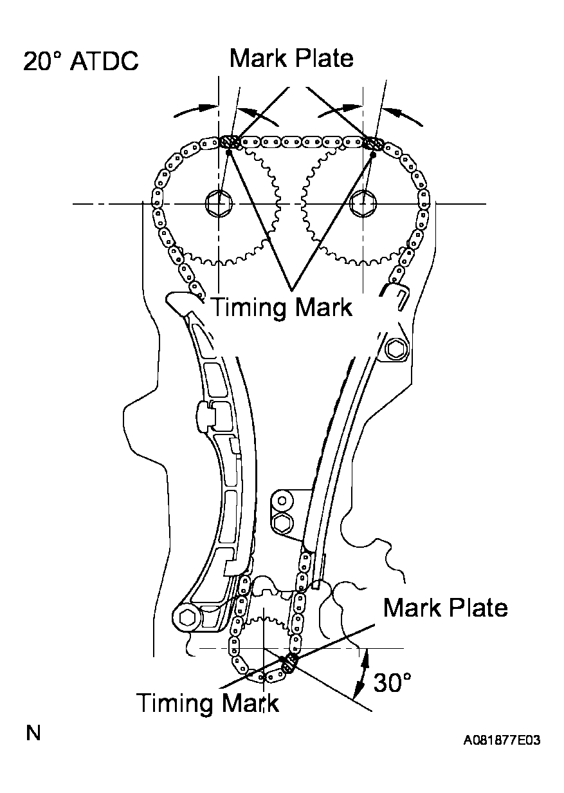
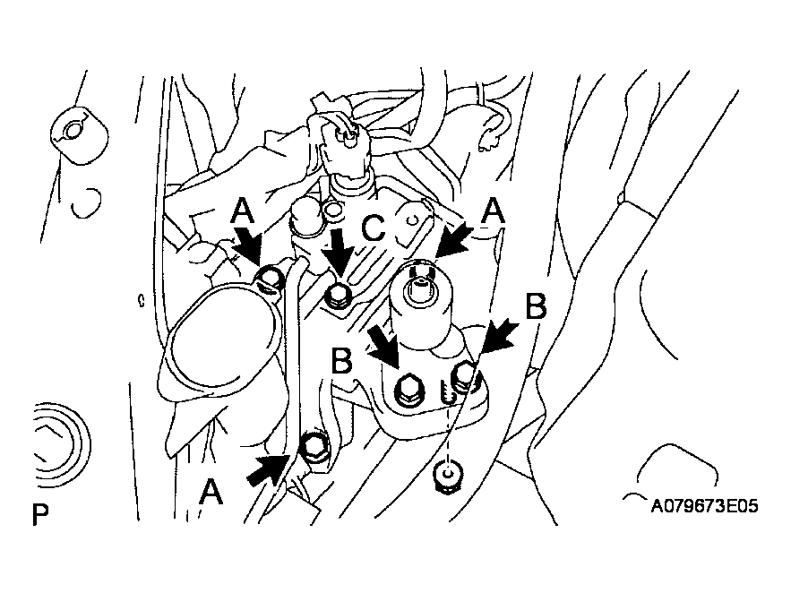
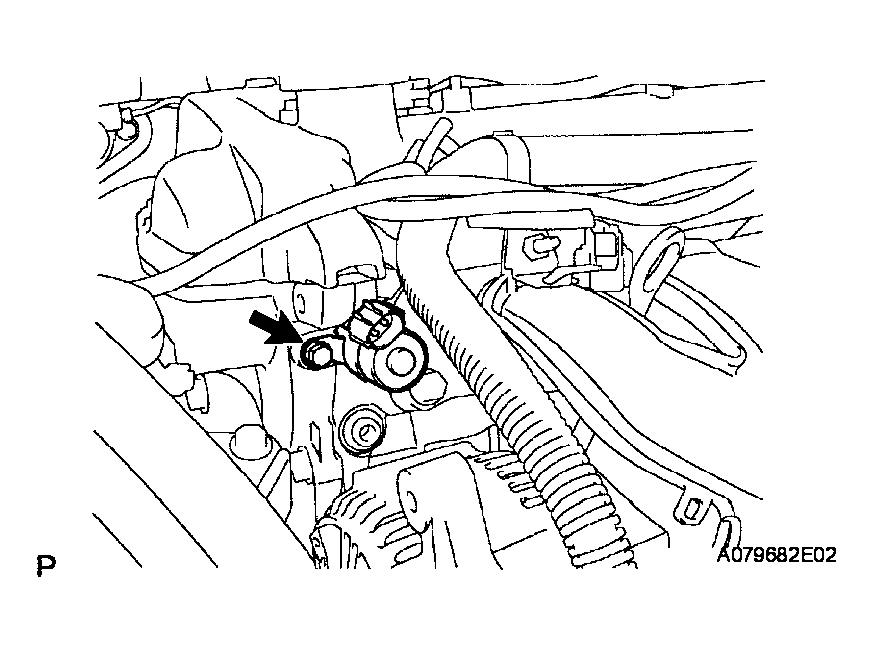
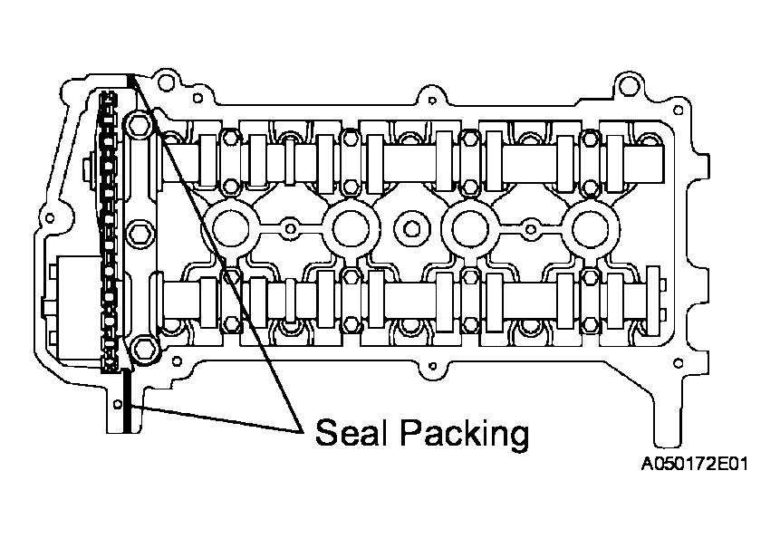
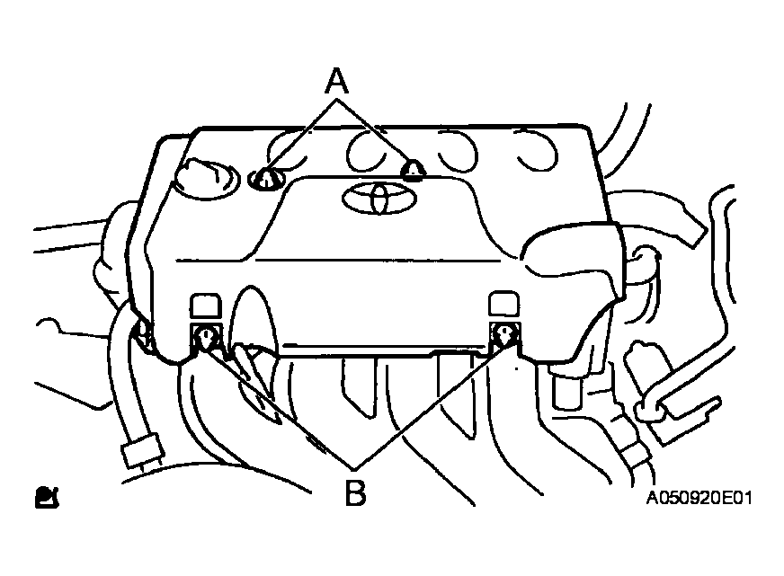

Timing Chain: Installation
- INSTALL CHAIN
- Set the position of the No. 1 cylinder to 20° ATDC.NOTE: To prevent the pistons from hitting against valves, the following procedures must be performed in the order below.
- Set the crankshaft between 40 to 140° ATDC.
- Set the cams of the intake and exhaust timing sprockets to 20° ATDC.
- Reset the crankshaft to 20° ATDC.
- Install the chain vibration damper with the 2 bolts.
Torque: 9.0 N*m (92 kgf*cm, 80 in.*lbf)
- Align the timing mark of the camshaft timing sprocket, camshaft timing gear and crankshaft timing sprocket with each mark plate (colored in yellow) of the timing chain.
HINT:
To prevent the exhaust camshaft from springing back, turn it using a wrench and set it at the mark on the chain.
- Install the chain tensioner slipper with the bolt.Fig 1: Aligning Timing Mark Of Camshaft And Crankshaft Timing Sprocket With Each Mark Plate Of Timing Chain

Courtesy of © TOYOTA, LICENSE AGREEMENT TMS1002Torque: 9.0 N*m (92 kgf*cm, 80 in.*lbf)
- Install the chain tensioner with the 2 bolts.
- While rotating the stopper plate of the chain tensioner upward as shown in the illustration, push in the plunger of the tensioner.
- While rotating the stopper plate of the tensioner downward, insert a 2.5 mm (0.098 in.) diameter bar into the holes of the stopper plate and the tensioner to hold the stopper plate.
- Install the chain tensioner with the 2 bolts.
Torque: 9.0 N*m (92 kgf*cm, 80 in.*lbf)
- Remove the bar from the chain tensioner.
- Check the tension between the intake and exhaust camshaft timing sprockets.
- Set the position of the No. 1 cylinder to 20° ATDC.
- INSTALL OIL PUMP SEAL (See REPLACEMENT )
- INSTALL TIMING CHAIN COVER (See REASSEMBLY )
- INSTALL WATER PUMP (See REASSEMBLY )
- INSTALL ENGINE MOUNTING BRACKET RH
- Install the mounting bracket RH with the 4 bolts.
Torque: 55 N*m (561 kgf*cm, 41 ft.*lbf)
- Install the mounting bracket RH with the 4 bolts.
- INSTALL ENGINE MOUNTING INSULATOR RH
- Install the mounting insulator with the 5 bolts and nut.
Torque: 45 N*m (459 kgf*cm, 33 ft.*lbf) for bolt A
52 N*m (530 kgf*cm, 38 ft.*lbf) for bolt B and nut
- Install the liquid tube with the bolt.

Courtesy of © TOYOTA, LICENSE AGREEMENT TMS1002Torque: 9.8 N*m (100 kgf*cm, 7 ft.*lbf) for bolt C
- Install the mounting insulator with the 5 bolts and nut.
- INSTALL CAMSHAFT TIMING OIL CONTROL VALVE ASSEMBLY
- Apply a light coat of engine oil to a new O-ring, and install it onto the camshaft timing oil control valve.
- Install the camshaft timing oil control valve with the bolt.

Courtesy of © TOYOTA, LICENSE AGREEMENT TMS1002Torque: 7.5 N*m (76 kgf*cm, 66 in.*lbf)
NOTE: Be careful not to twist an O-ring.
- INSTALL CRANKSHAFT POSITION SENSOR (See INSTALLATION )
- INSTALL WATER PUMP PULLEY (See REASSEMBLY )
- INSTALL CRANKSHAFT PULLEY
- Align the pin hole of the crankshaft pulley with the pin position and install the crankshaft pulley.
- Using SST, install the pulley bolt.
SST 09330-00021, 09213-58012 (91111-50845)
Torque: 128 N*m (1,305 kgf*cm, 95 ft.*lbf)
- INSTALL CYLINDER HEAD COVER
- Apply seal packing to the 2 locations shown in the illustration.

Courtesy of © TOYOTA, LICENSE AGREEMENT TMS1002Seal packing: Part No. 08826-00080 or equivalent
NOTE:- Remove any oil from the contact surface.
- Install the cylinder head cover within 3 minutes of applying seal packing.
- Do not start the engine for at least 2 hours after installation.
- Install the head cover with the 9 bolts, 2 seal washers and 2 nuts.
- Using several steps, uniformly tighten the bolts and nuts in the sequence shown in the illustration.
Torque: 10 N*m (102 kgf*cm, 7 ft.*lbf)
- Apply seal packing to the 2 locations shown in the illustration.
- CONNECT NO. 2 VENTILATION HOSE
- Connect the No. 2 ventilation hose to the cylinder head cover.
- CONNECT VENTILATION HOSE
- Connect the ventilation hose to the cylinder head cover.
- INSTALL IGNITION COIL
- Install the 4 ignition coils with the 4 bolts.
Torque: 9.0 N*m (92 kgf*cm, 80 in.*lbf)
- Install the 4 ignition coils with the 4 bolts.
- INSTALL NO. 2 CYLINDER HEAD COVER
- First tighten the nuts labeled A, and then tighten the nuts labeled B.

Courtesy of © TOYOTA, LICENSE AGREEMENT TMS1002Torque: 7.0 N*m (71 kgf*cm, 62 in.*lbf)
- First tighten the nuts labeled A, and then tighten the nuts labeled B.
- INSTALL GENERATOR (See REASSEMBLY )
- INSTALL VANE PUMP V BELT (See REMOVAL )
- INSTALL GENERATOR V BELT (See REMOVAL )
- ADJUST GENERATOR V BELT (See REMOVAL )
- ADJUST VANE PUMP V BELT (See REMOVAL )
- INSPECT DRIVE BELT TENSION (See ON-VEHICLE INSPECTION )
- INSTALL OIL PAN DRAIN PLUG
- Install the drain plug with a new gasket.
Torque: 37.5 N*m (383 kgf*cm, 28 ft.*lbf)
- Install the drain plug with a new gasket.
- ADD ENGINE OIL (See REPLACEMENT )
- CHECK FOR ENGINE OIL LEAKS
- ADD COOLANT (See ON-VEHICLE INSPECTION )
- CHECK FOR ENGINE COOLANT LEAKS (See ON-VEHICLE INSPECTION )
- CONNECT CABLE TO NEGATIVE BATTERY TERMINAL